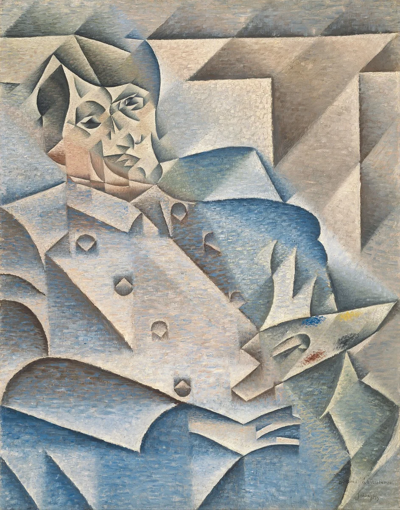
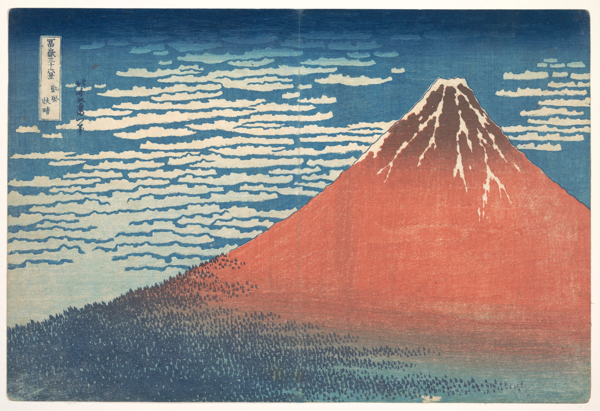

Draw an idea
Turn simple shapes and lines into something recognizable. Start drawing →
Imagine it · Make it · Share it
A line can become a character. A few colors can set a mood. A picture can tell a whole story before anyone reads a word.
That is the magic of 2D design: using shapes, colors, images, and words to make people see and feel something. From the posters in your hallway to your favorite game characters, design is everywhere—and you can make it too. You don't have to be an expert artist to begin. Curiosity is enough.

There is more than one way in
Follow the idea that excites you. Each project is a chance to experiment, notice what works, and make it your own.
Turn simple shapes and lines into something recognizable. Start drawing →
Use color, images, and lettering to make a poster people notice. Design a poster →
Give a figure a pose, a personality, and a little movement. Try animation →
Imagine a character and a world, then turn them into a game. Explore game design →
On paper or in a drawing tool, use only a circle, a triangle, and a rectangle to create a character. Change their sizes, colors, and positions. Can you make one version look friendly and another look mysterious? Show someone and ask what they notice first.
Think like a designer: Which choice changed the feeling most? There is no single right answer—try an idea, look closely, and try again.
Interactive Warm-Up · How Flat Screens Fake Depth
Artists can make a flat screen feel like a world you could step into. Turn the buttons off and on, then move the slider. Which change makes the biggest difference? These visual clues help artists, animators, and game designers create a sense of distance.
All 5 cues active: foreground shapes overlap midground, shrink toward the horizon, fade into sky blue, and scroll at different parallax speeds.
Unit 1 · Pioneers of the Flat Surface
Every pioneer lesson pairs historical biography and zoomable primary-source artwork with an interactive studio lab where you can test their breakthrough firsthand.




Class discussion prompt: Each artist had only a flat surface. What did each one invent or use to show something a flat surface cannot hold on its own: glowing light, multiple viewpoints at once, multi-layer registration, or living motion?
Unit 2 · Vector Drawing, Raster Editing, Color & Layout
Master our in-house raster image editor (Layer Lab) right inside this module, alongside interactive studios for color harmony, typographic hierarchy, and visual perception.
Observe an object, check proportions and negative spaces, then turn a contour into a five-value drawing and an invented design.
Build a recognizable emblem from editable geometry, then export an SVG.
Arrange a clear reading order and defend your choices with a quick audience test.
Combine vector art, color and typography into a poster for a real audience.
Stack transparent pixel layers, hide non-destructively with alpha masks instead of erasing, mix colors with W3C blend modes, use smart subject selection and healing tools, and round-trip files as PSD, OpenRaster (.ora), PNG, and JPEG across 10 self-checking missions.
Manipulate hue, saturation, and value; test RGB additive vs. CMY subtractive mixing; and build complementary, triadic, and split-complementary palettes.
Tune scale, weight, line height, and kerning so a reader knows immediately where to look first, second, and third on a page or game HUD.
Test over 40 interactive illusions—from opponent-color afterimages to checker-shadow luminance tricks—to see how the visual cortex interprets flat images.
Finish when: You can sketch three poster ideas, combine vector art with readable type and color, test the message with a peer, revise and export your final design. Use Layer Lab for raster compositing without destroying original pixels.
Unit 3 · 2D Rigging & Keyframe Animation
Learn both main branches of 2D animation: skeletal joint rigging (where a parent-child bone tree rotates via forward kinematics) and frame-by-frame sprite animation.
Pose 12-segment stick figures with Forward Kinematics, toggle Onion Skinning and Center-of-Mass balance guides, generate smooth in-betweens, inspect real student .piv animations, and export .piv files or transparent PNG game sprite sheets.
Test 4–24 FPS frame rates, squash-and-stretch deformation, and parallax depth across stacked foreground, midground, and background glass planes.
Paint idle, run, jump, and fall frames on a pixel grid with onion skinning, then pack them into a single horizontal sprite sheet.
Connect your idle, run, jump, and fall loops to a finite state machine so player velocity and ground contact choose the right animation automatically.
Finish when: You have posed and exported a looping character action in the Pivot Stick Figure Studio and can explain how parent-child forward kinematics positions each limb.
Unit 4 · Make It Play
The 2D Game Developer Pathway is a complete 10-lesson course where every student builds and ships Pixel Courier, an original 2D platformer. Every lesson's lab shares the same live browser asset store: the hero you draw in Lesson 01 is the exact character you animate in Lesson 02, move in Lesson 05, and package in Lesson 10.

Overview of the 4 acts, starter pack download, and live playable Pixel Courier testbed.
01 Pixel Art & Sprites · 02 Sprite Sheets & Animation · 03 Tilesets & Tilemaps
04 Game Loop & Rendering · 05 Movement & Jump Feel · 06 Collision & Response
07 Cameras & Parallax · 08 Animation States · 09 Level Design & Game Feel · 10 Menus, Saving & Shipping
Finish when: A classmate can play your finished game from the title screen to the victory state without your help.
Sister Module
Flat-picture skills carry straight into three dimensions: orthographic front/side/top views become a CAD solid, raster layers become UV textures, and a 2D stick-figure walk cycle becomes a 3D skeletal armature. Continue in 3D Design, or start with Blueprint Drafting, where a flat drawing is the plan for a solid object.